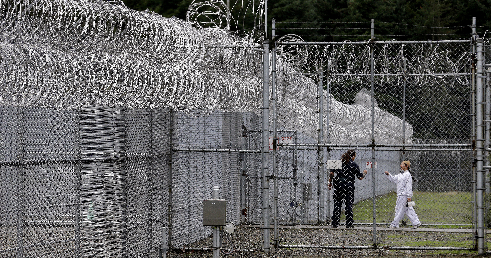

Razor Wire and the $210M US-Mexico Border Troop Deployment
How razor wire and concertina barriers secure critical perimeters — design, deployment, and effectiveness analysis.
Read MoreSecurity fencing, platform enclosures, and corrosion-resistant mesh for chemical processing and petrochemical refining — engineered to meet the strictest safety and environmental standards.
Oil and gas facilities operate some of the most sensitive and hazardous industrial environments in the world. Refineries, petrochemical plants, and chemical processing sites demand perimeter security and operational mesh products that withstand corrosive chemicals, salt spray, and H2S-laden atmospheres while meeting stringent API, OSHA, and IEC safety standards. Kestrel Metal engineers fencing and enclosure systems purpose-built for protecting critical energy infrastructure.
From high-security anti-climb perimeter fencing around refinery boundaries to galvanized grating and mesh platforms for elevated walkways, our products are manufactured to deliver long service life in the harshest conditions. 316L stainless steel options, heavy hot-dip galvanizing, and fire-rated mesh systems ensure compliance with hazardous area classifications and blast-resistant design requirements across downstream and midstream operations.

Specialized security fencing and mesh products engineered for the demanding conditions of petrochemical and refining operations.

358 anti-climb security fencing engineered for refinery perimeters and critical infrastructure boundaries. Narrow mesh apertures prevent cutting and climbing while maintaining visibility for surveillance systems. Heavy-gauge galvanized steel construction delivers decades of service in aggressive industrial environments.
View Product
Razor wire concertina coils provide a formidable top-of-fence deterrent for high-value refinery and processing plant perimeters. Hot-dipped galvanized or stainless steel construction resists corrosion in coastal and chemical-laden atmospheres, delivering reliable passive security for restricted zones.
View Product
Galvanized grating and welded mesh panels engineered for elevated platforms, walkways, and stair treads in processing units. Slip-resistant surfaces and heavy load ratings support safe personnel access across refineries, while open mesh design prevents accumulation of hazardous residues.
View Product
Welded mesh enclosures safeguard critical processing equipment, instrumentation, and valve stations from unauthorized access and environmental damage. Modular designs allow rapid installation around existing infrastructure while maintaining ventilation and visual inspection of enclosed assets.
View ProductWe understand the unique challenges petrochemical operators face — and we engineer solutions to address each one.
Refineries and chemical plants expose materials to aggressive chemicals, salt spray, and H2S that rapidly degrade standard steel products.
316L stainless steel and hot-dip galvanized coatings provide exceptional resistance to chemical attack, salt corrosion, and sour gas environments for extended service life.
Protecting critical energy infrastructure from intrusion, sabotage, and theft demands perimeter security far beyond standard commercial fencing.
358 anti-climb and anti-cut fencing with integrated razor wire delivers certified high-security perimeter protection for refineries, terminals, and critical infrastructure zones.
Hazardous area classification requires mesh and enclosure systems that maintain integrity during fire and blast events to protect personnel and assets.
Fire-rated and blast-resistant mesh systems engineered to maintain structural integrity in hazardous zones, supporting compliance with facility safety and blast mitigation requirements.
Oil and gas operators must satisfy API, OSHA, and IEC standards with fully documented materials and certified manufacturing processes.
Certified products with full documentation including material test reports, compliance certificates, and traceability records to streamline regulatory approvals and audits.

316L stainless steel options for superior resistance to chemical, salt, and H2S corrosion in aggressive petrochemical environments.
API-compliant products manufactured to meet American Petroleum Institute standards for oil and gas facility applications.
Anti-climb 358 mesh with narrow apertures prevents cutting and climbing while supporting surveillance visibility.
Hot-dip galvanizing with heavy zinc coatings for long-term corrosion protection in coastal and industrial atmospheres.
Custom enclosure design engineered around existing equipment and facility layouts for seamless integration.
Full compliance documentation with material test reports and traceability records to support regulatory audits.
Our products meet the international standards and certifications relevant to this industry.
Quality management system governing all security and enclosure product manufacturing.
Products compliant with American Petroleum Institute standards for oil and gas facility infrastructure.
Sulfide stress cracking resistant materials for sour gas and H2S environments.
Standard specification for seamless and welded stainless steel pipe and mesh used in corrosive environments.

How razor wire and concertina barriers secure critical perimeters — design, deployment, and effectiveness analysis.
Read More
Learn how dual-layer fencing creates detection zones and delay times that protect high-value petrochemical facilities.
Read More
Understanding NATO-22 razor wire specifications and why military-grade barriers are used for critical energy infrastructure.
Read MoreContact our engineering team for project-specific product recommendations, custom specifications, and competitive pricing.